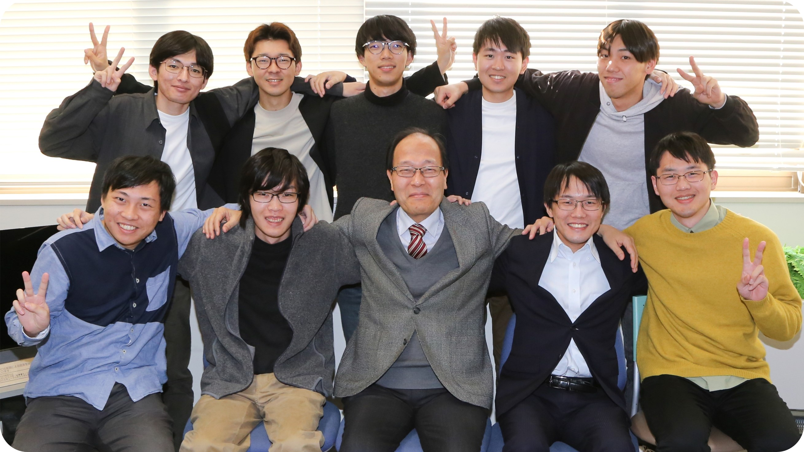

最所研究室
当研究室は、2025年3月に最所教授の御退職を以て、その活動を終了しました。
これまで賜りましたご支援とご厚情に、心より御礼申し上げます。
香川大学創造工学部 情報システム・セキュリティコース (旧:工学部 電子・情報工学科) 最所研究室のホームページです。
実施しておりました研究テーマについては、サイドメニューから 研究テーマ紹介をご覧ください。
最所先生のWebページはこちら。
香川大学によるStaff紹介ページはこちら。
研究室紹介のスライド資料はこちら。
なお、御用がある方は、最所研究室を修了した 竹原一駿 takehara.ichitoshi[at]kagawa-u.ac.jp ([at]を@に変更して) まで御連絡ください。

ひとこと
研究室のコンセプトはこちら。